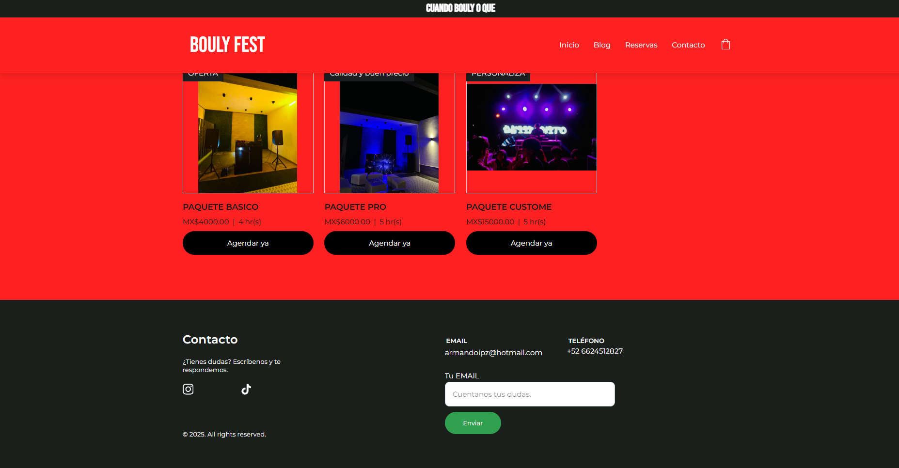

Portafolio · Aplicaciones Web
Matrícula: 24311089 · Grupo: 4-1
Estudiante de Sistemas en desarrollo de software y arquitecto de bases de datos. Apasionado por diseñar sitios web y aplicaciones robustas, escalables y orientadas a soluciones reales para empresas a través de mi firma DesiertoSoftware.
Sobre mí
Soy estudiante de Sistemas enfocado en desarrollo de software y arquitectura de bases de datos. Me motivó tomar este curso el deseo de crear, analizar y prepararme para hacer proyectos de gran nivel. A través de DesiertoSoftware, mi objetivo es desarrollar sitios e infraestructura digital funcional para empresas y proyectos que requieran soluciones modernas, estables y bien estructuradas.
Stack
Proyecto Integrador
DesiertoSoftware es una plataforma web desarrollada para la gestión eficiente de servicios de desarrollo de software y administración de datos. Cuenta con autenticación de usuarios donde un usuario registrado tiene acceso a un panel CRUD para crear, editar, actualizar y eliminar sus propios registros dentro de la base de datos MySQL en la nube. Elegí este proyecto para afianzar mis habilidades profesionales en arquitectura web y gestión de datos.

Evidencia por unidad
Cada enlace lleva a la versión pública que entregué al cerrar esa Unidad, sobre el mismo proyecto.
Unidad 1
Prácticas:
Unidad 3
Prácticas:
Unidad 4
ver en render: próximamente
ver en github: próximamente
Contacto